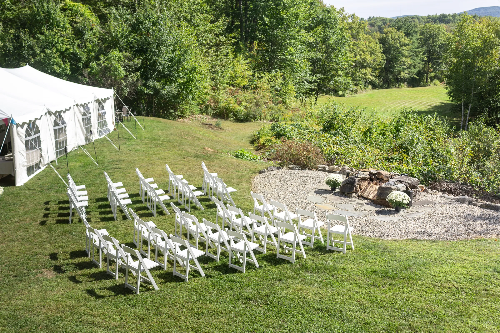
01
Home
A tent on the lawn, hydrangeas on every table, and a few personal touches that were pure Kacie and Clancy.
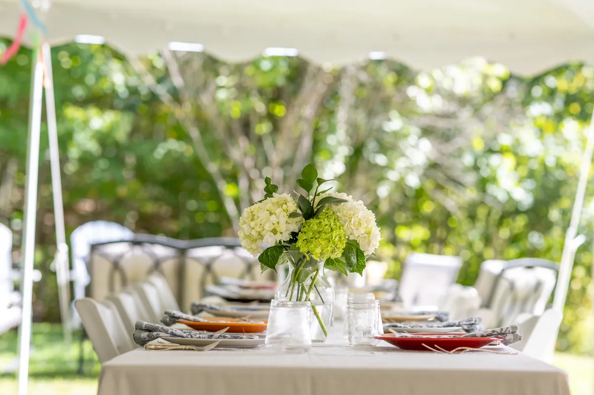
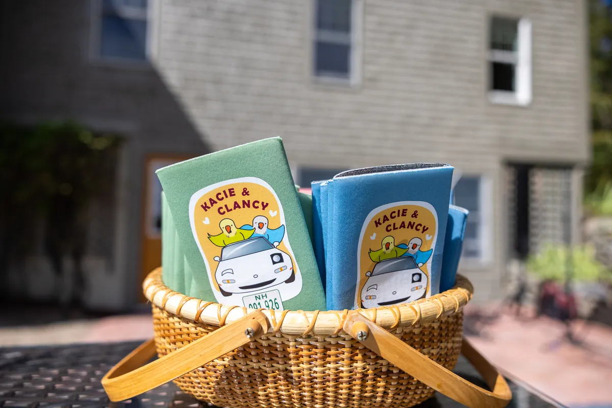
02
Getting ready
His mom tied the bow tie one last time. Three generations gathered around the bride. Nobody was in a hurry.
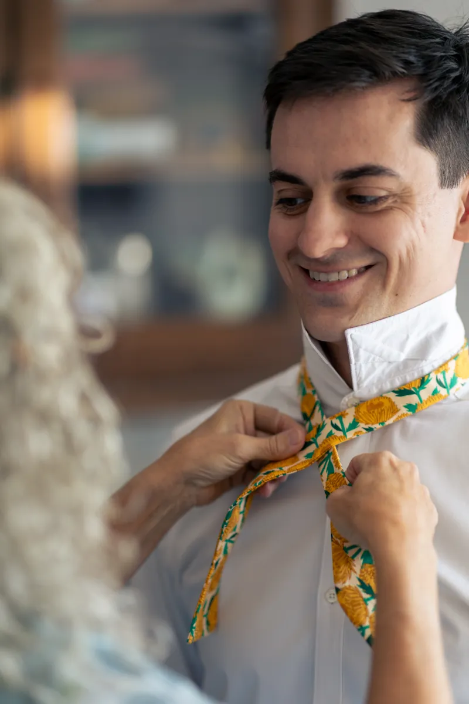

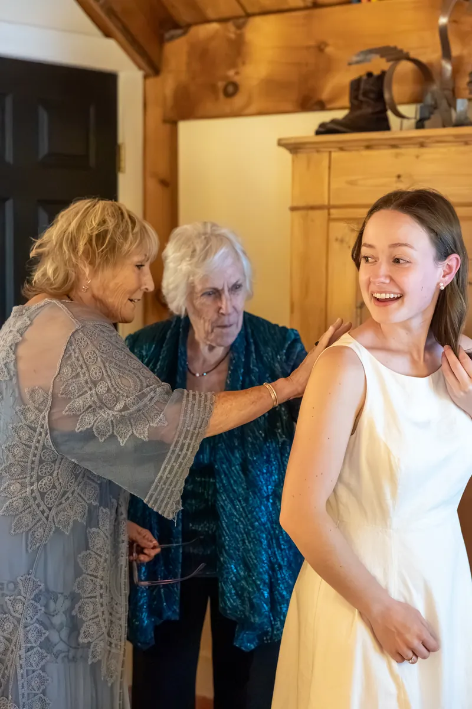
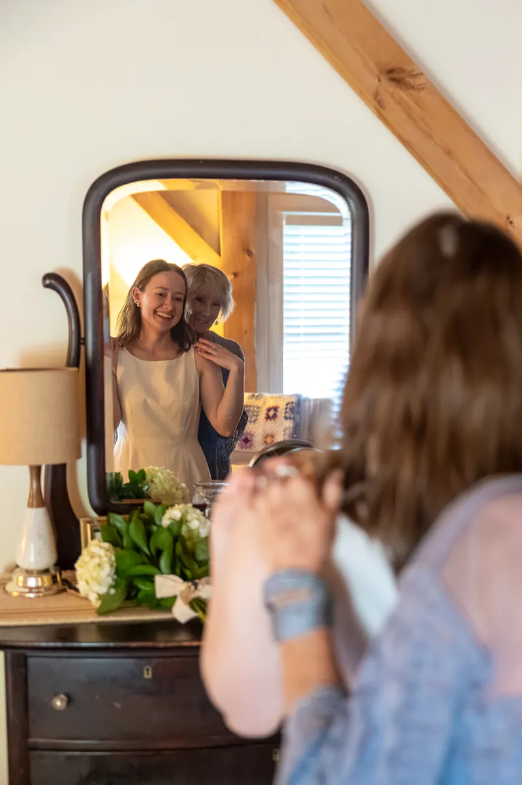
03
The ceremony
The flower girls led the way, Kacie walked in with her parents, and Clancy didn’t try to hide a thing.
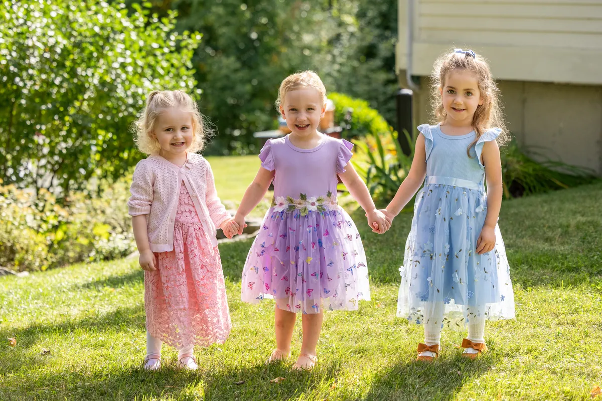
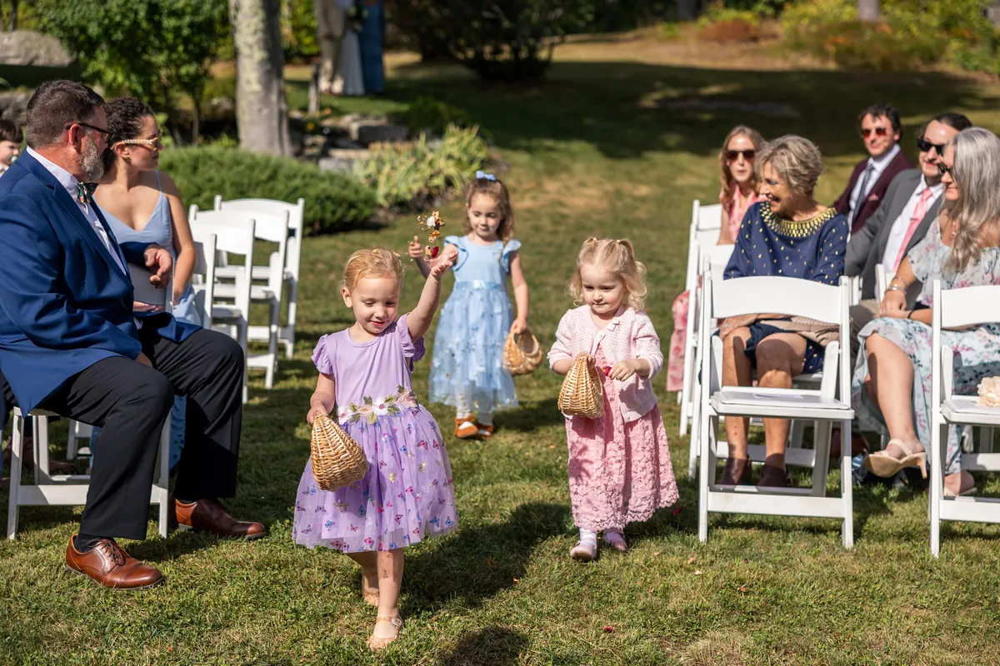
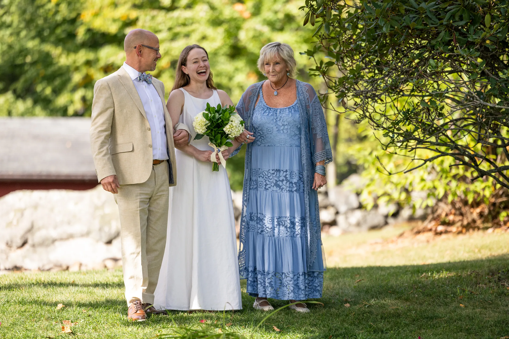
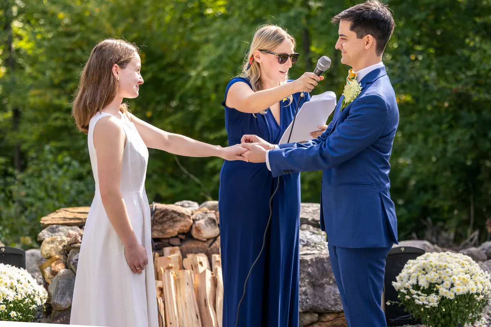
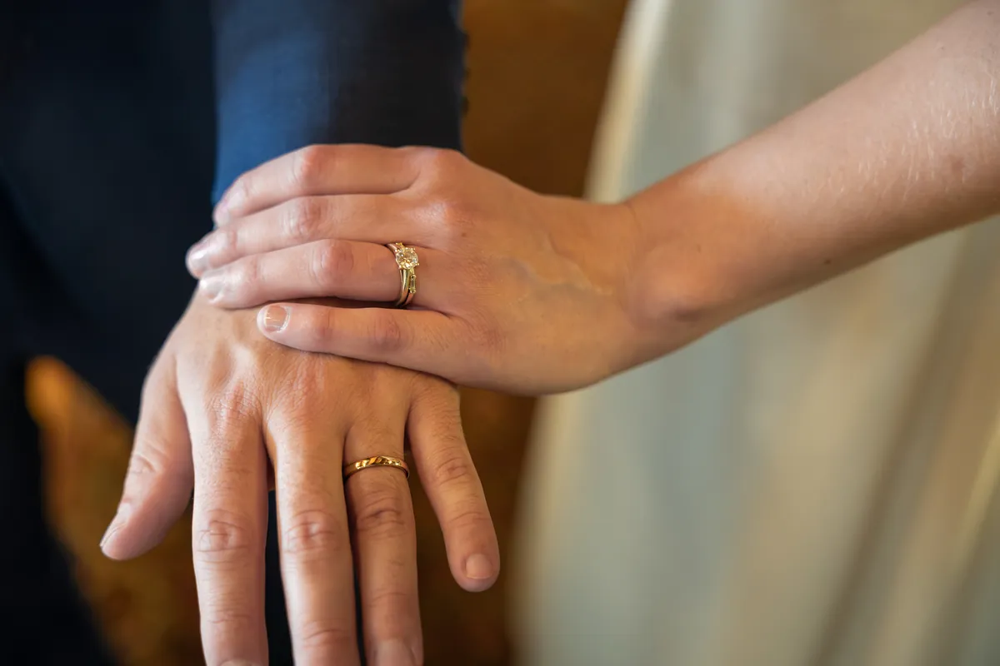